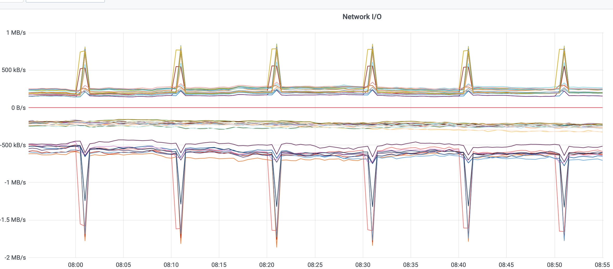
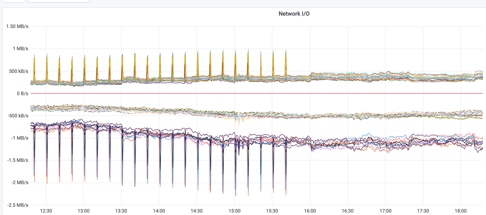

昨天晚上我们的推荐服务出现故障，排查到很晚。影响了50多个主播和用户的曝光卡的使用效果，虽然没有产生特别大的事故，但我觉得自己还是有必要做个复盘，毕竟有自己做的不好的地方。
时间轴
大概21:20分，服务开始有大量错误报警，推荐帧 v2接口和附近动态的 rpc 请求全部进入降级状态。
22:00 报错突然降成 0
- 22:10 又开始报错，23:10 分报错消失
处理经过
回顾一下我的排查过程，在报警前几分钟，我更新了本周要扶持的荣耀主播名单，这个名单是一周一换，每周二更新，正常情况下运营会在白天把名单给我，但今天运营晚上19点才给我，当时我在吃饭，吃完饭后因为处理另一个问题就把改配置的事给忘了，晚上到家后才配置上。
报错时没有想到会是配置的问题，因为这个配置我已经配置好多周了，都没有出过问题，而且是配置完后过了几分钟才开始报错的，看日志报的都是空指针异常，但是没有具体定位是那一行，起初以为是 live 对象缺少字段或者本身为空，加日志看了下并没有问题。
大概21:53，我想到有没有可能是配置的问题，所以把新增的配置删掉，发现问题并没有解决，到了22:00 的时候突然不报错了，这个时候因为是个整点时间，我怀疑是不是某个活动或者某个有脏数据的主播下播了？心想明天到了公司查下这个时间点下播的主播找找原因。
因为我前几分钟把荣耀主播的名单下掉了，这个名单需要在凌晨4点生效，所以我看既然没问题了就把配置恢复吧，恢复完配置文件几分钟后，刚要去洗漱就又开始报警。我和另一个同事决定继续加日志排查，一直搞到23点也没发现代码有问题，这时候我决定再下线刚才的配置，下完后没有恢复，不过到了23:10突然降成了0。又等到23:30发现没有报错我才去睡的，因为经历了这么长时间的惊心动魄，凌晨3点才睡着。
为了验证是不是配置文件导致，第二天早上7点我重新把这份配置上去，7:10又开始报错。删除配置后，7:20恢复。
故障分析
为什么会在整10分报错？
ai 所使用的配置文件在 hbase 中，为了提升效率会定期同步到 redis 一份，resource 类的配置文件我设置的是10分钟同步一次，所以会出现当有配置变更时，整10分钟才会生效。
为什么要10分钟才加载一次呢，因为我并不知道业务实际会用到哪些，索性把库中所有的配置都 load 了一遍，这会导致 redis 的抖动，不易太频繁。如下图所示

后边我改成了，当下游调用配置时，我会记录下来调用配置的 key，刷新配置时只刷新在用的配置，这样可以做到秒级或者分钟级刷新。
优化后效果如下：

配置错在了哪里？
配置中存在重复项，代码中解析这个配置后会转成一个 map，用到了 lambda 表达式
1 | .collect(Collectors.toMap(Pair::getKey, Pair::getValue); |
可以理解为，key 是主播的 ID，value 是要扶持的量，这段代码当有重复 key 时会报错，解决方法是传入第3个参数，告诉程序当 key 冲突时的 merge 逻辑，因为我这里不关心太具体保留哪个 value，可以简单实现：
1 | .collect(Collectors.toMap(Pair::getKey, Pair::getValue,(value1, value2) -> value2)); |
后续优化
- 避免7点后（非上线时间）更改线上配置
- 运营配置尽量做到 admin 和自动化
- 服务出故障后优先想想最近有哪些改动（即使只修改了配置文件）
- 配置刷新频率不宜过低